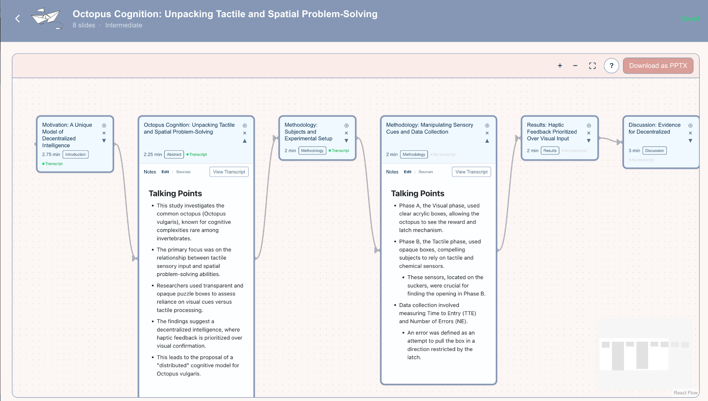
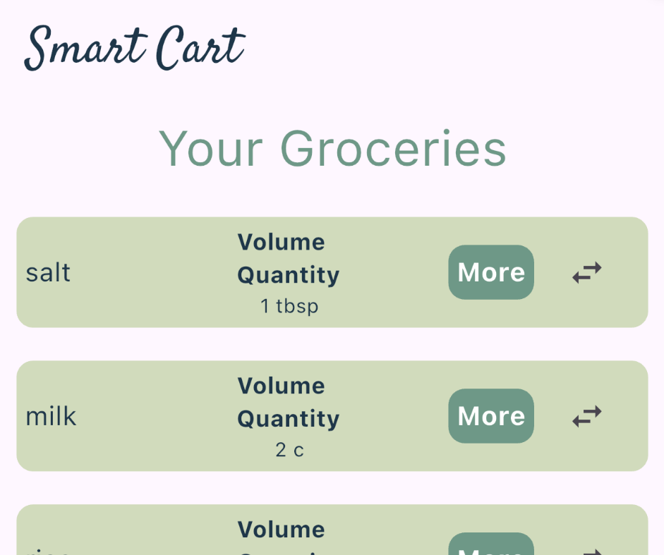

An LLM-assisted workspace that transforms academic papers into structured presentation timelines — with talking points, speaker notes, and interactive editing.

A mobile meal-planning app that turns recipes into consolidated grocery lists with normalized quantities and location-aware store discovery.
Earlier work
More Projects
Earlier coursework and experiments in frontend interaction, AI tooling, and interface design.
A speech-practice tool that transcribes recordings and highlights filler words in context, with explanations for why each phrase was flagged.
A full-stack reservation platform for booking party spaces and activity amenities, with account management, time-slot scheduling, and reservation history.
Currently building
In Progress
A structured workflow tool exploring task organization and human-centered productivity systems.